Etapa 10 • Grupo 1 — telas 01 e 02
Tela 01: o globo deixa de flutuar no vazio e passa a ocupar o centro de um salão corporativo em forma de planetário — piso circular de pedra escura com meridianos gravados, pedestal com friso de luz fria, anel vermelho fino no piso, colunata de lâminas escuras e cúpula com projeção estelar discreta. Sem luzes novas e sem névoa nos materiais do salão: globo, países, trajetórias, halo e rótulo do Japão e legendas permanecem iguais.
Tela 02: a grade em wireframe neon dá lugar a um átrio corporativo monumental — alas de escritórios em sete pavimentos, balcões com guarda-corpo de vidro, cobertura de vidro sob céu de início de noite e duas passarelas que ligam as alas (uma com friso vermelho fino). Na 02.2 a câmera sobe em direção à passarela, em eco à ponte de 1908.
Antes × depois • 1440 × 900
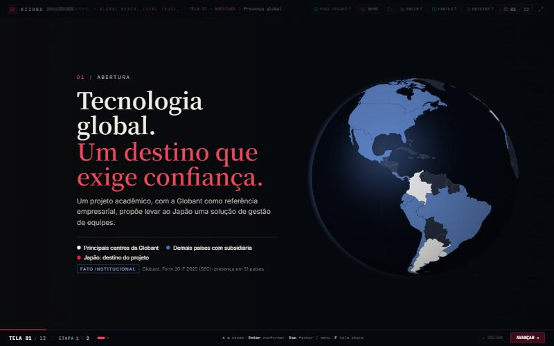
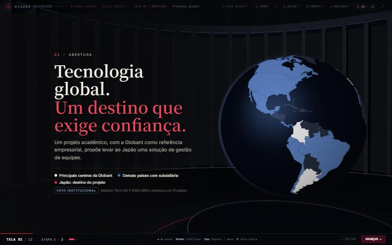
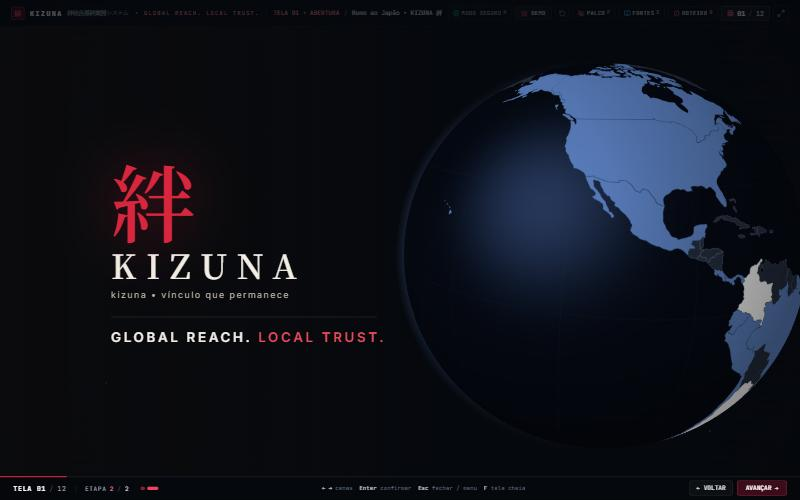
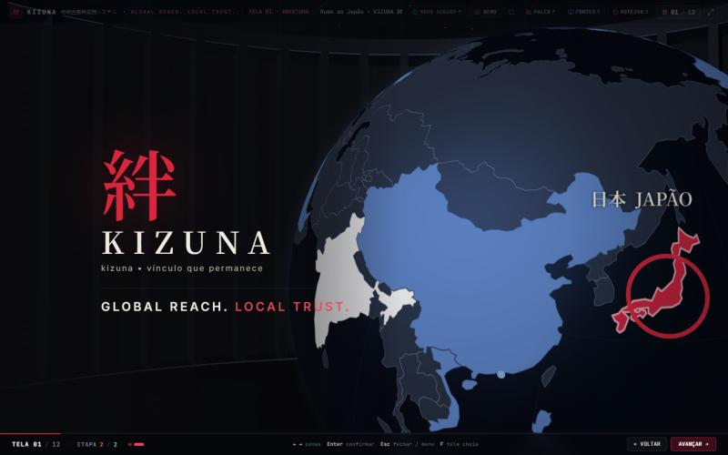
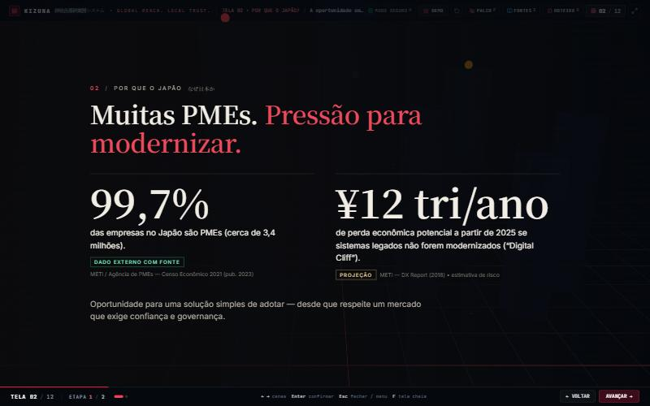
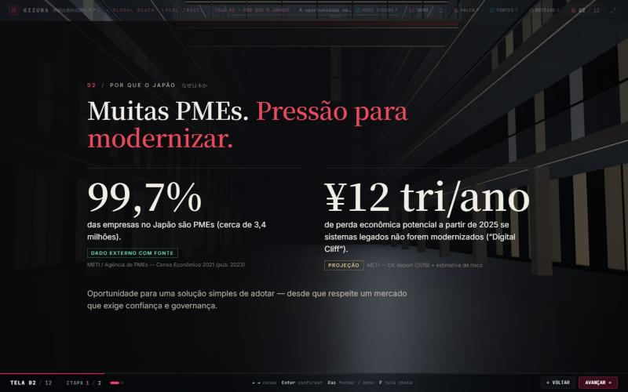
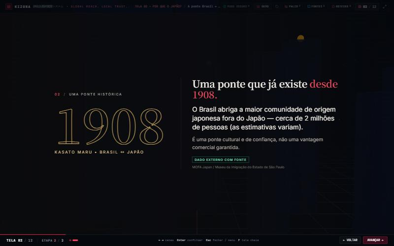
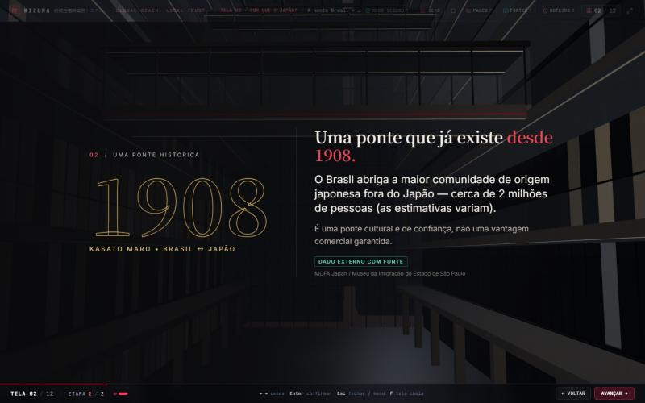
Outras resoluções
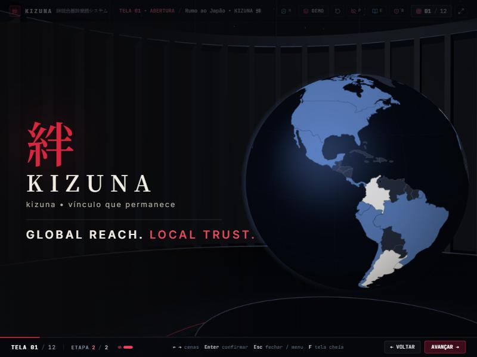
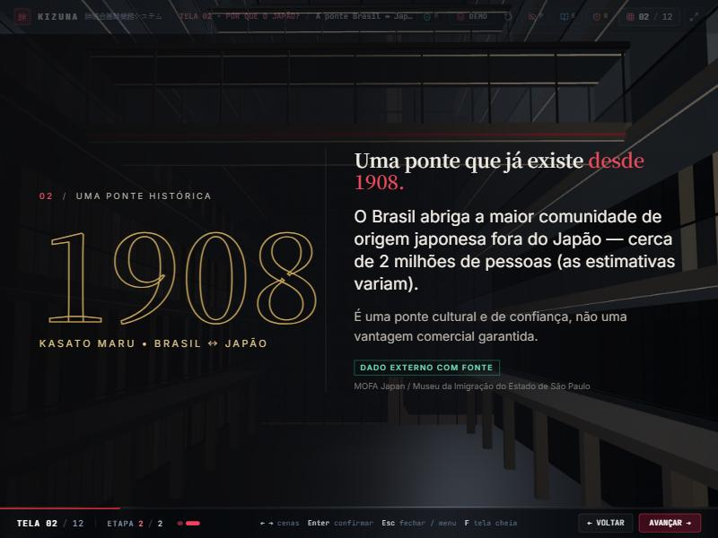
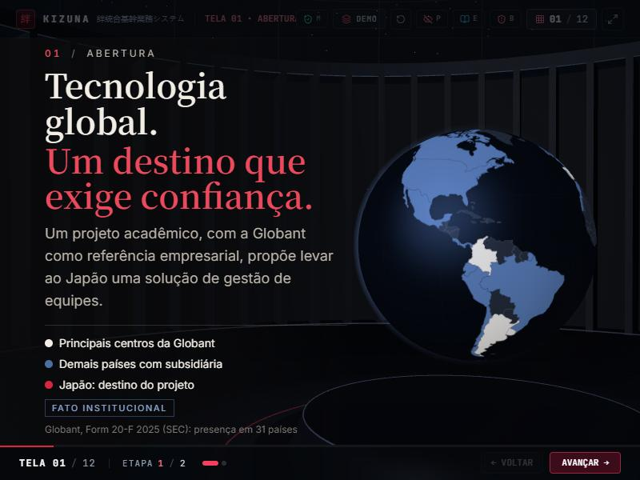
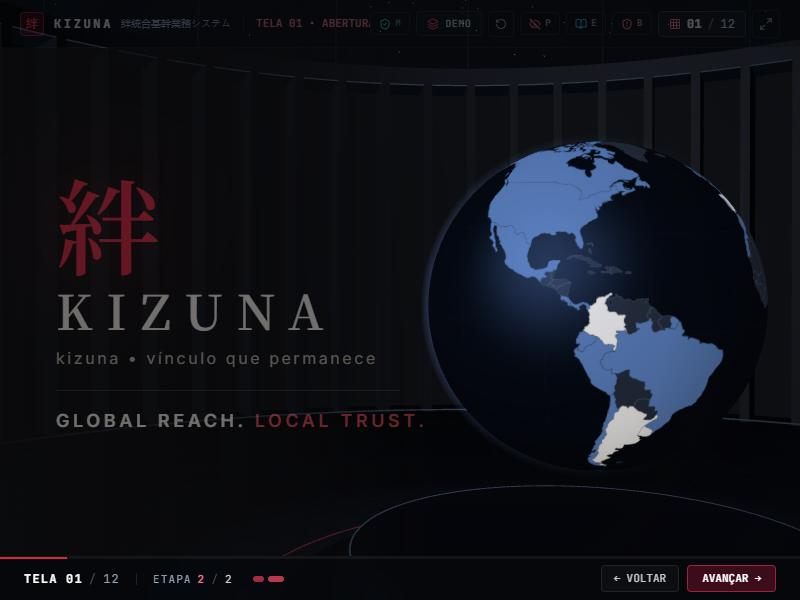
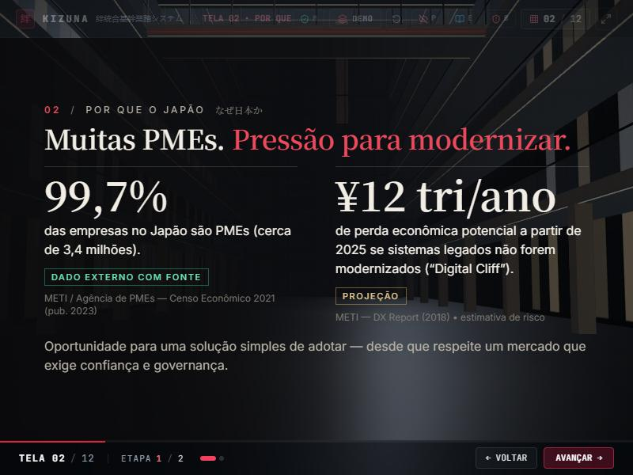
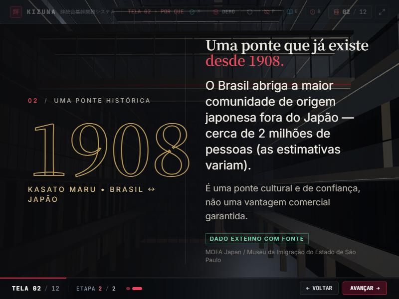
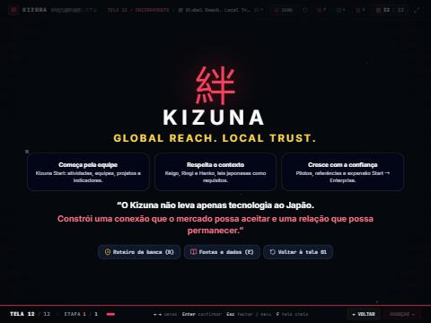